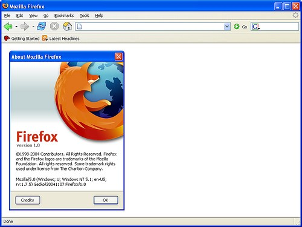

Firefox 1.0 fue lanzado en 2004 y se convirtió en un gran éxito en menos de un año, fue descargado más de 100 millones de veces.
Las nuevas versiones de Firefox han salido con regularidad desde entonces y siguen estableciendo nuevos records.
La popularidad de Firefox ha ayudado a ser elegida de nuevo por los usuarios.
La competencia renovada ha acelerado la innovación y la mejora de Internet para todo el mundo.
